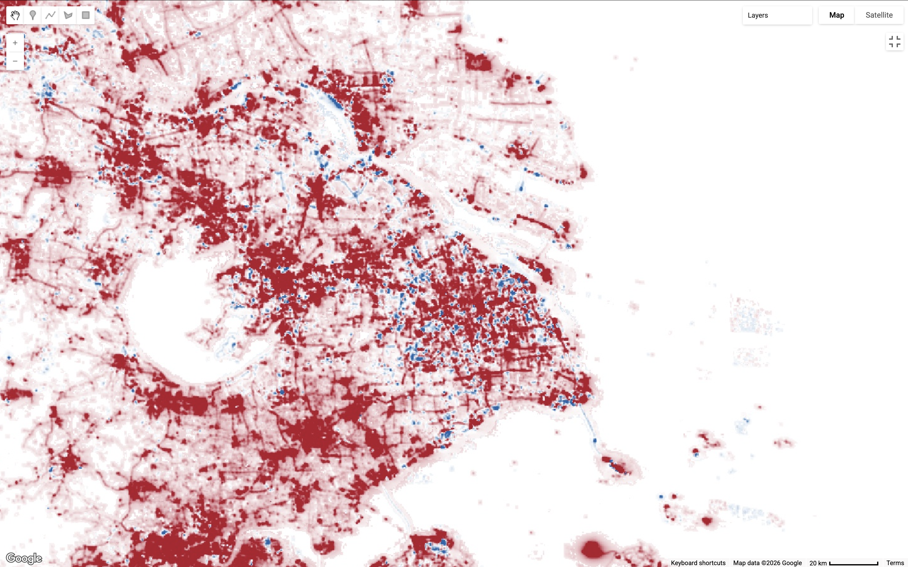
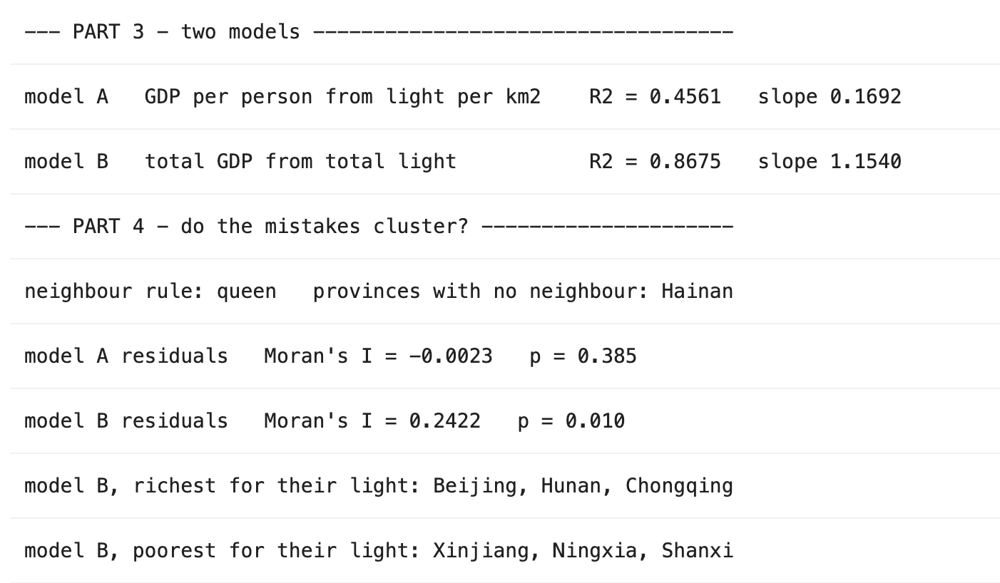

Lab 06 · November 2026
A Better Fit, a Clustered Error: Predicting Provincial GDP from Nighttime Light
The question
Can nighttime light seen from space predict the GDP of China's 31 provinces, and do the mistakes of the best-fitting model cluster on the map? I also tested whether the answer changes when I change who counts as a neighbour.
The data
- Thirty-one provinces. The script holds one row for each province, autonomous region and municipality that the China Statistical Yearbook 2025 gives a GDP for. The GDP figure is for 2024 and is marked preliminary there. Hong Kong, Macau and Taiwan are not in that table, so they are not in the data.
-
Nighttime light. The raster is the VIIRS annual composite, which gives average
radiance for every 500 m cell. I looked at 2014 and 2024. The
ntl_sumandntl_meancolumns in the table come from the samereduceRegioncall I ran in Part 2, applied to each province's outline. Mean radiance runs from 0.016 in Xizang to 15.3 in Shanghai, so both models use a log10 scale. - A neighbour list someone had to write. Nothing in a satellite image says which provinces touch. The script writes the queen list out by hand, 31 lines long. Under that rule Hainan, an island, has no neighbour. I kept it in the data with an empty neighbour list.
What I did
I used the Google Earth Engine Code Editor through the NYU VPN. I saved the script as
lab06 and ran it. Five layers appeared: lights 2014, lights 2024, the change between them,
and two red boxes over the Yangtze delta and the Changtang plateau in northern Xizang.
From a raster to a number. For each box, reduceRegion took the mean of all
the cells inside, with scale: 500 and maxPixels: 1e9. I read the delta in 2014
and 2024, their ratio, and the Changtang in 2024 from the Console.
Two models. Model A predicts GDP per person from light per km². Model B predicts total GDP from total light. Both are fitted on a log10 scale, and I read each R² from the Console.
Do the mistakes cluster? A residual is the actual GDP minus the predicted GDP. For each
model I tested whether provinces resemble their neighbours' residuals with Moran's I. The p-value comes
from shuffling the residuals across the map 999 times and counting how often chance does as well as the
real map. I ran this twice with the queen rule, where provinces are neighbours if their outlines touch.
Then I changed one line, var RULE = 'queen'; to var RULE = 'knn4';, so that each
province counts its four nearest provinces as neighbours, measured centre to centre. That rule also gives
Hainan neighbours.
The screenshots
Both screenshots are from the public VIIRS archive and my own Console output. They show no individuals. My script is here: Earth Engine shareable snapshot.


Results
Model B fits much better than Model A (R² = 0.8675 against 0.4561), but its mistakes cluster on the map and Model A's do not. Under queen contiguity, Model B's residuals have Moran's I = 0.2422 with p = 0.013, and Model A's have I = −0.0023 with p = 0.378. Changing the neighbour rule to four nearest provinces did not change that.
Answers to the lab questions
| Question | Answer |
|---|---|
| Q1. Delta ratio, Changtang value, both R², and which model I would report. | The Yangtze delta's mean radiance went from 4.89 in 2014 to 7.82 in 2024, a ratio of 1.60. The Changtang's mean in 2024 is 0.0019, essentially zero. Model A has R² = 0.4561 (slope 0.1692) and Model B has R² = 0.8675 (slope 1.1540). Before Part 4, I would have reported Model B, because it explains 87% of the variation against 46% for Model A. |
| Q2. Moran's I and p-value for both residuals, from two runs. Why did one number move and not the other? | Run 1: Model A I = −0.0023, p = 0.378; Model B I = 0.2422, p = 0.013. Run 2: Model A I = −0.0023, p = 0.374; Model B I = 0.2422, p = 0.019. Moran's I did not move because the residuals and the neighbour list are the same, so the formula gives the same answer every time. The p-values moved because each run shuffles the residuals randomly 999 times, so each run counts a slightly different set of shuffles. |
| Q3. The two new values under knn4. Did my conclusion change? | Model A I = 0.0141, p = 0.308; Model B I = 0.2753, p = 0.004. My conclusion did not change. Model B's residuals still cluster, and slightly more strongly. Model A's still look random. |
The better fit fails the test
Model B explains 87% of the variation in total GDP, but neighbouring provinces tend to be wrong in the same direction, and chance alone rarely produces a pattern that strong. Model A explains 46%, and its mistakes are scattered. Clustered mistakes suggest that Model B leaves out something geographical, and that its stated uncertainty is too small. The R² could not tell me this. Only the map of the errors could. I did not test what Model B leaves out.
Changing the neighbour rule
| Neighbour rule | Model A: I (p) | Model B: I (p) |
|---|---|---|
| Queen, run 1 | −0.0023 (0.378) | 0.2422 (0.013) |
| Queen, run 2 | −0.0023 (0.374) | 0.2422 (0.019) |
| Four nearest provinces (knn4) | 0.0141 (0.308) | 0.2753 (0.004) |
Model B's clustering stays significant at the 5% level under both rules, and Model A's stays near zero. The knn4 p-value for Model B (0.004) is a little below the range the lab gives (roughly 0.005 to 0.015), which fits the run-to-run wobble in a shuffle test. The lab brief also reports that a third rule, every province within 900 km, drops Model B's I to 0.11 and raises p to 0.074. I did not run that rule. So my conclusion holds for the two rules I tried, and a different rule could change it.
Where Model B was most wrong
The provinces richest for their light are Beijing, Hunan and Chongqing. The poorest for their light are Xinjiang, Ningxia and Shanxi. These lists were the same under both neighbour rules, which makes sense, because the residuals do not depend on who is a neighbour. The lab points to the Tarim Basin in southern Xinjiang as an example: it is bright, but almost none of that light is a city.
A zero is a measurement
The Changtang box comes back at 0.0019. That is not missing data. The sensor looked and found almost nothing across about three hundred thousand cells of plateau. It would break the logarithms the models use, which works for provinces only because every province, even Xizang, has enough lit ground to total more than zero. Aggregating to provinces makes the model possible, and it also throws away the detail I saw in Figure 1.
Written reflection
I would report Model B, but not alone. In Q1 I chose it because 87% of the variation is far more than 46%. The error map changed what I would attach, not which model I would pick: its residuals cluster (I = 0.2422 under queen contiguity, 0.2753 under knn4), so I would say that its stated uncertainty is too small, name the neighbour rule, and give the range. Model A has random errors, but it explains less than half of the variation.
When light is read as money, the people in places where light and income come apart are misread. Xinjiang is one of the three provinces Model B rates poorest for their light, so the model expects more output there than the province reports. The Tarim Basin is bright, and the lab says almost none of that light is a city. I did not check what it is. A light-based estimate would make people there look better off than the statistics say. Someone with local data would have to notice, because nothing in the image shows it.
Limitations and AI use
There are only 31 provinces, so Moran's I rests on a small number of places. The p-value comes from a random shuffle, so it changes a little each time I run it. I tried only two neighbour rules, and the lab brief says a third could make Model B's clustering not significant. Moran's I shows that the mistakes cluster. It does not say why, and I did not fit a spatial error model, which the lab says would remove the clustering. I kept Hainan with no neighbours under the queen rule, which is a choice. The GDP figures are preliminary. A brighter cell is not the same as growth: new lighting, greenhouses and LED street lamps all change radiance, and LED is bluer, so some real growth can show up as dimming. The ratio of 1.60 describes one rectangle over the delta, not the whole region or its income.
I have not redistributed the course data. The screenshots show public satellite data and my own output, and they do not identify any person.
AI use: I used Claude to help organize my results into this entry and to check the arithmetic. I checked the numbers against my Earth Engine Console output and the lab instructions. The analysis and interpretation are my own.